Introduction
Die, mould and tool wear are major reasons for production downtime and increased costs in most industries. Apart from using strong base metals for making dies, a few effective treatments can be administered to dies to increase their service life. Even if possible, such treatments are not feasible for all metal-forming units. This article introduces a practical and economical technique to increase die, mould and tool life. The technique can be easily adopted by all metal-forming units, big and small.
Popular Treatments to Increase Die Life or Repair / Reclaim Forging Dies
1. Nitriding
Gas Nitriding / Plasma Ion Nitriding are popular surface hardening treatments carried out on dies. With an initial die hardness of 42 HRC, the nitriding process can further harden the surface of die up to 64 HRC. Many large forge shops in India carry out nitriding of 100% of their forging dies. However, very few forging companies have an in-house nitriding facility. Nitriding is found effective in many cases. The skill of the nitrider, flawless nitriding facility and process play a vital role in the success of this technique. Nitriding is also a capital-intensive technique and not many companies can afford the finance, space and skilled workforce to set up an in-house nitriding facility. Getting the dies nitrided from commercial heat treat shops is not always feasible. Finally, additional efforts are required to carry out selective nitriding and mask areas of components where nitriding is to be avoided.
2. PVD, CVD
Treatments like PVD (Physical Vapour Deposition) and CVD (Chemical Vapour Deposition) are popular in the machine-tool industries in America and European countries. These techniques are yet to evolve completely in the Indian forging industry. PVD is slowly gaining share in the Indian machine-tool treatment market. It ensures surface hardness of up to 90 HRC. However, the result of PVD treatment on forging dies is not documented. Cost of PVD is approximately Rs. 800/- per kg. of metal that is treated (as on date of this article). CVD technology is not yet introduced in India.
3. Welding to Repair / Reclaim Worn Out Dies
Apart from the mentioned treatments, the only option available is to repair and reclaim the dies through welding. Conventionally, welding of the worn out areas of dies or welding of cracks in dies is carried out. Flood welding of the dies is also carried out to completely reclaim the dies. However, this technique also poses its own limitations:
Limitations of Conventional Welding:
- Requirement of skilled welders
- Requires open space or effective ducting for carrying out welding operation
- Time consuming process as forging dies must be taken to welding area
- Pre and post welding heat treatment / stress relieving is necessary
Usually, conventional welding is a ‘Repair-Oriented’ technique. It is carried out after the dies are damaged or worn out.
New Protective Treatment to Increase Die Life: Japanese Cold Welding
A new Japanese cold-welding technique enables appropriate surface hardening of dies, moulds and tools to increase their service life. The technique involves electronic coating of tungsten carbide on selective wear-prone areas of dies / moulds / tools through Japanese Cold Welding Technique.
Cold welding is carried out as a ‘Preventive Maintenance’ technique on new dies. It is a surface hardening technique, similar to nitriding and PVD, but is administered using a completely different methodology. Hardness of tungsten carbide layer deposited by cold-welding on dies can surpass nitriding to reach hardness of more than 70 HRC.
Photographs indicating beginning of die wear on forging dies are given below.
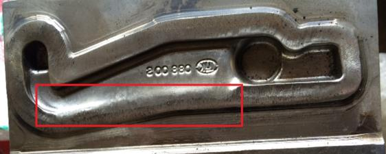
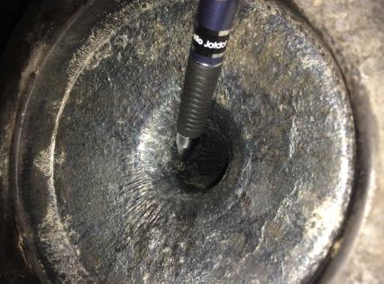
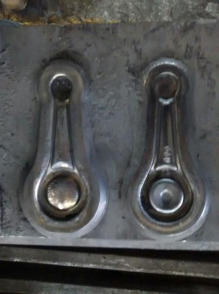
Benefits of Japanese Cold Welding Technology
- Skilled welders not required. Can be carried out by anyone.
- Open space not required. No fumes are generated during cold welding.
- Time saving process as dies need not be removed from forging equipment.
- Pre and post welding heat treatment not necessary. No stresses are generated during cold welding as it is a cold process.
Additional Benefits of Japanese Cold Welding Technology
- Nitriding of dies not required as hardness of tungsten carbide coating is more than 70 HRC, which is higher than nitriding hardness (62–64 HRC).
- Increased die life due to high wear resistance.
- Substantially reduced maintenance downtime of dies and tools.
- Can be carried out on selective areas of dies that are prone to wear. Does not require the complete die to be treated / protected.
Compact Cold Welding Equipment and Applicators
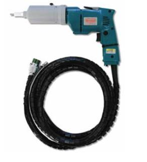
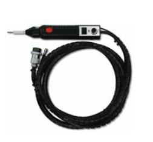
Argon gas cylinder is shown in the photograph. It is recommended to be used during the cold welding process to avoid oxidation of carbide electrode.
Can Be Used By Anyone, Anywhere
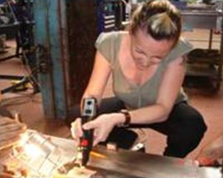
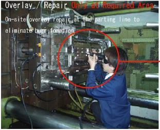
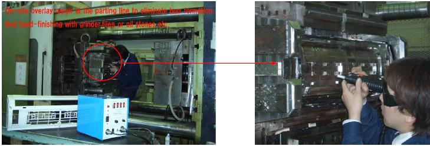
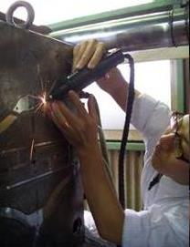
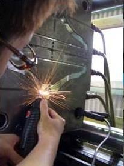
Principle of Operation
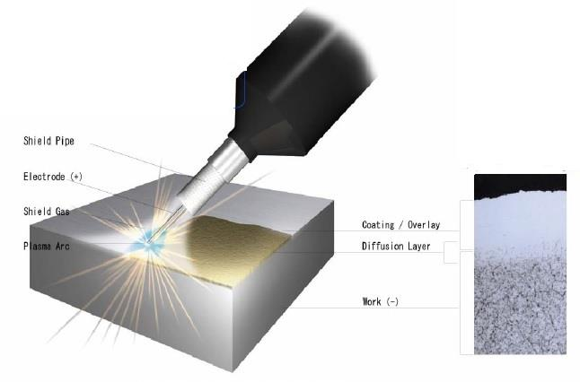
Consumable electrode made of alloys and intermetallic compounds are deposited on the die by means of electronic spark at a frequency of 10-1 to 10-3 second for one to millionth of seconds per spark. Direct current from the power supply will heat the electrode to 8,000 to 25,000 deg. C., only at the contact areas and transfer a small quantity of electrode to the work piece under an ionized state. A strong metallurgical bond is thereby produced.
Characteristics of Carbide Coating
1. Wear Resistant
Due to inherent strength of tungsten carbide, the wear resistance is high. If the die is hard and heat treated well, a good forging die life can be expected after carbide protective coating.
2. Heat Resistant
The coating is heat resistant and will not cause heat checks. Excessive heat leading to die wear will be prevented in protected areas.
3. Scuffing Resistant
Scuffing and bruising is the initial stage of having serrations on die. This scuffing will be prevented or substantially delayed.
4. Lubricity
Many times, due to very smooth finish of new dies, the forging / casting die lubricant does not adhere to the die. This problem is not faced in the case of carbide coated dies. It is observed that die can be lubricated better than before.
High Quality and Performance Procedure
- Extremely low heat input eliminates distortion, shrinkage, under-cut, or stress.
- Provides excellent bonding by the formation of diffusion layer under work surface. No re-movable after procedure.
- Shield Gas (Ar, He etc.) avoids oxidation during its procedure and may provide excellent thick overlay.
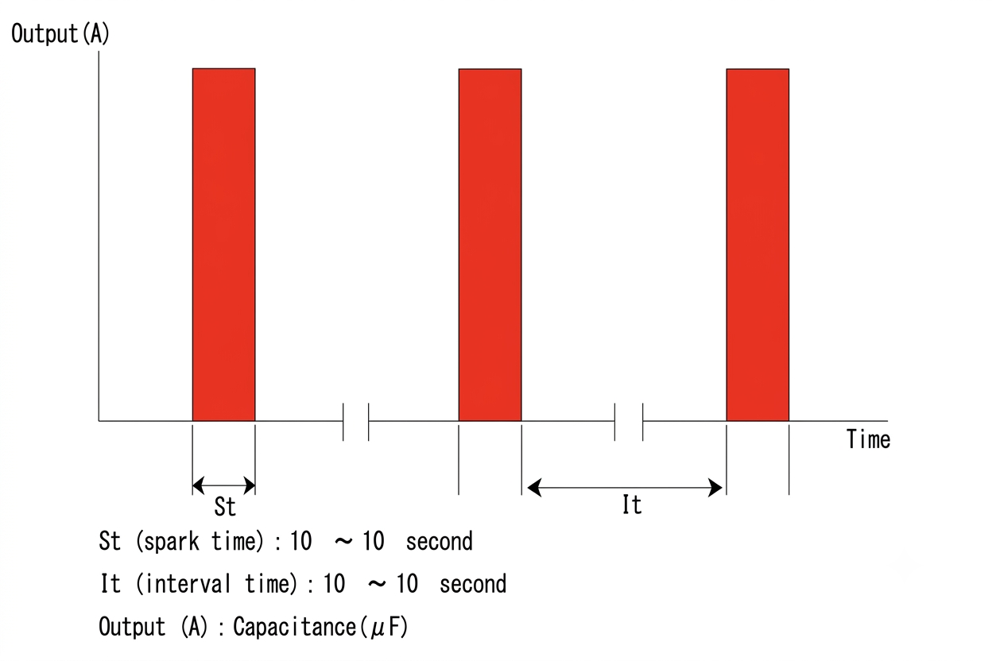
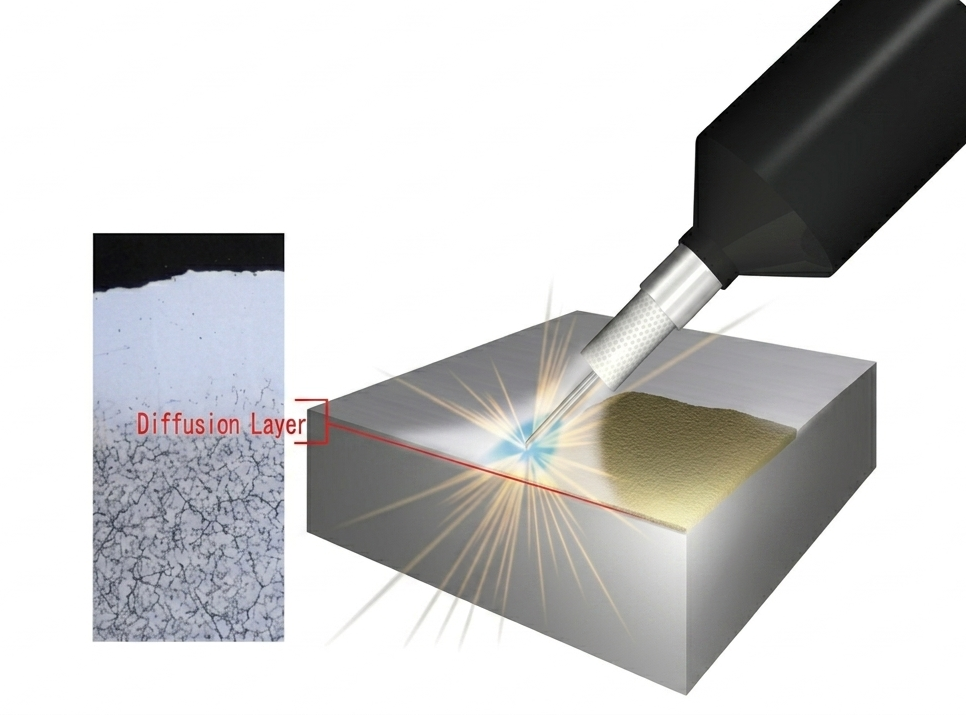
Proven Excellent Heat Resistance
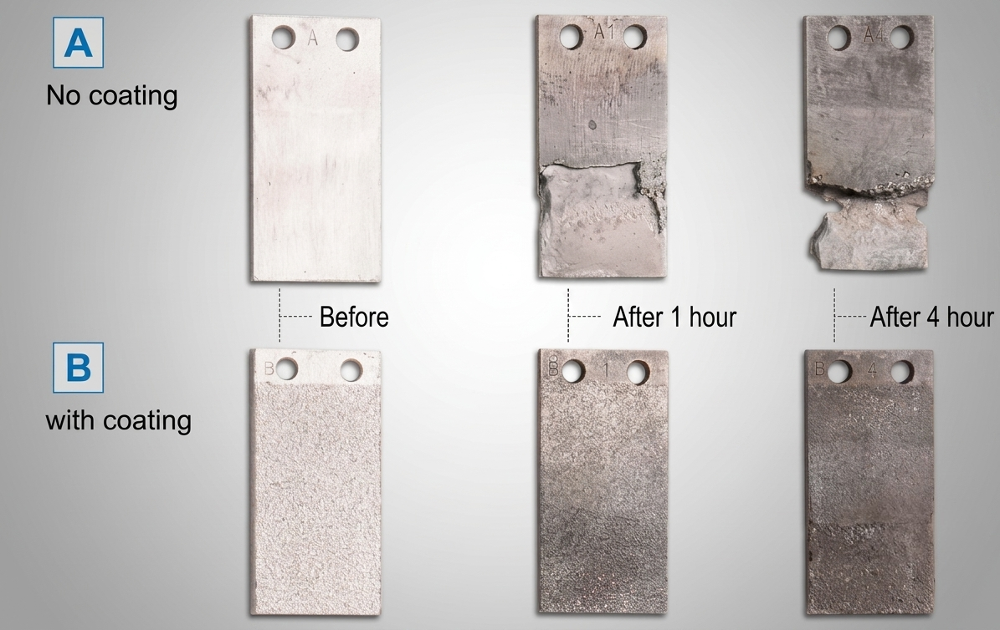
Comparison With Other Techniques
Cold welding rates highest or joint-highest on 7 of the 10 comparison criteria below, on a scale of 1 (worst / most expensive) to 5 (best / least expensive):
| Item | Cold Welding | Thermal Spraying | Spot Welding (Sheet / Wire) | Spot Welding (Powder / Paste) | Argon Welding | Laser Welding |
|---|---|---|---|---|---|---|
| Easy to handle | 5 | 3 | 5 | 5 | 2 | 3 |
| Heat input | 5 | 3 | 5 | 5 | 1 | 5 |
| Distortion / Under-cut | 5 | 3 | 5 | 5 | 1 | 5 |
| Bond strength | 4 | 2 | 1 | 1 | 5 | 4 |
| On-site work | 5 | 3 | 5 | 5 | 5 | 1 |
| Deposition speed | 3 | 5 | 2 | 2 | 5 | 2 |
| Equipment cost | 4 | 3 | 4 | 4 | 5 | 1 |
| Treatment cost | 5 | 3 | 4 | 4 | 4 | 1 |
| Materials | Ni, Co etc. (electrode) | Ni, Co (powder) | Steel (sheet / wire) | Steel (powder / paste) | All materials (rod) | All materials (wire) |
| Applicable substrates | Steel, Al, Cu alloys | Steel, Al, Cu alloys | Steel only | Steel only | Steel, Al, Cu alloys | Steel, Al, Cu alloys |
Applicable Substrates, Examples & Safety
Applicable Substrates
Available overlay substrates are low & medium carbon steels, tool steel, die & mould steels, cast steels, stainless steels, aluminium alloys, copper alloys, and the majority of alloys and composites having sufficient electrical conductivity.
Applicable Examples
- Coating as preventive maintenance and overlay repair on aluminium diecasting and casting dies
- On-site overlay repair of machine parts
- In-line overlay repair of injection moulds
- Overlay repair and coating procedure on press-squeeze dies
- Overlay repair of casting defects in casting aluminium and copper
Safety — Human & Eco-Friendly
- Easy operation makes it a high quality procedure that can be carried out by anyone.
- Environmentally safe. Produces no toxic gas, drainage, or unpleasant odour and noise.
- The only gear required for safety operations is safety glasses against weak UV light.
- Safety operation is secured by double safeguards in every machine.
Successful Cold-Welding Case Studies in the Indian Metal Forming Industry
A number of esteemed Indian metal-forming organisations have tried out carbide coating on wear-prone areas of their dies and tools using Japanese cold-welding technique. Some photographs and results are given below.
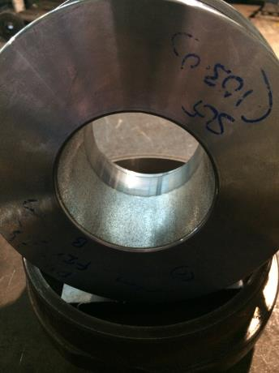
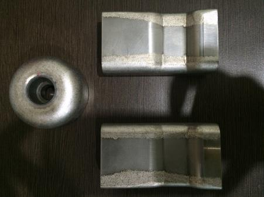
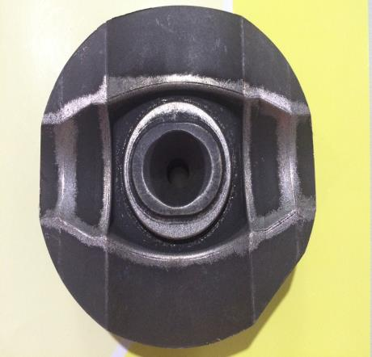
Substantial Increase in Die Life After Cold-Welding
| S. No. | Description | Metal Forming Equipment | Not Coated Die Life (parts made) | Japanese Cold-Welded Die Life (parts made) | % Increase in Die Life |
|---|---|---|---|---|---|
| 1 | Sheet metal pressing die & tool set | Sheet metal press | 18,500 | 25,900 | 40% |
| 2 | Hot forging die | 1000 ton forging press | 4,000 | 5,400 | 35% |
| 3 | Hot forging die | 1600 ton forging press | 8,000 | 12,000 | 58% |
| 4 | Hot forging die | 1600 ton forging press | 10,000 | 22,000 | 120% |
Till date, no negative result is observed in any of the demonstrations of this technique carried out in various metal forming operations. The percentage of increase in die and tool life has varied from as low as 14% to as high as 120%. Various parameters that contribute to success of this technique are well documented, leading to refinement of the technique, assuring best results in each new trial.
Summary
Japanese cold welding technique of electronically overlaying protective carbide layer on metal-forming dies and tools holds promise of increased die & tool life, reduced maintenance downtime, convenience of operation and better productivity. As the concept is proven, it is a requirement in every modern metal-forming unit seeking cost reduction and increased profitability.
Call to Action: Identify one wear-prone area on a die currently in service. Team SPS can help evaluate whether Japanese cold-welding is the right preventive maintenance step for it.

Srikar Shenoy
A management graduate with over two decades of techno-commercial experience in the steel industry. He works alongside seasoned metallurgical engineers to solve customer challenges and drives business growth at Steel Plant Specialities.